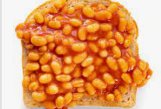

<a href="../index.html">Home</a>

<h1>Beans on toast</h1>

<p>Made up of beans and bread</p>

<h2>Ingredients</h2>
<ul>
    <li>Beans</li>
    <li>Toast</li>
    <li>Butter</li>

</ul>
<h2>Steps</h2>
<ol>
    <li>Toast bread</li>
    <li>Microwave beans</li>
    <li>Butter bread</li>
    <li>Put beans on the toast</li>
    <li>Add pepper to taste</li>
</ol>